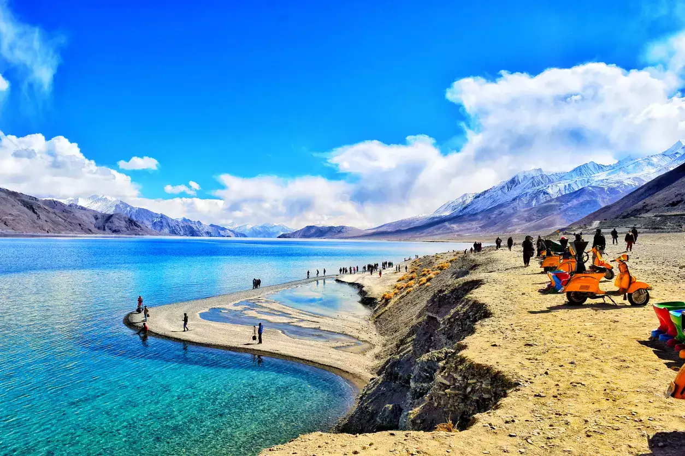

Ladakh
Ladakh

The Land of High Passes, Ladakh, the newly created Union Territory in India (previously a part of Jammu & Kashmir), boasts a landscape that can leave you with your jaws dropped. It is a place where the landscape changes dramatically; it is truly astonishing to see the mountains, snow, cold desert, alpine meadows and lakes at a short distance from each other. Tourism in Ladakh is an absolute delight for nature lovers as well as adventurers.
Ladakh is majorly popular amongst the adventurers who feel welcomed by the number of adrenaline rushing activities offered here. The union territory is amongst the top trekking destinations in India with amazing and unmatched treks like the popular Frozen River Trek/Chadar Trek. Ladakh also has opportunities for mountaineering, motor biking, mountain biking, white water rafting and more.